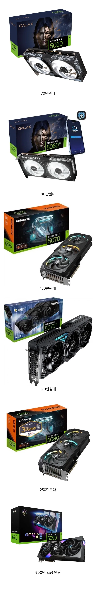

오늘이 가장 싸다 ㅅㅂ
출처 - 디시

오늘이 가장 싸다 ㅅㅂ
출처 - 디시
2060 20만원대 사고 그랬는데
5090 말고는 지금 쓰는거 퍼지면 살수는 있겠다
4090 초기에 230쯤에 산건 정말 최고의 선택이었어
너무 비싸진다
컴알못인데
나 2070super? 인데 어디까지 돌아감?
다른 부품에 따라 다르겠지만 최신 고사양게임아니면 다 돌아갈듯
fhd급에선 대부분 다 60프레임 유지 몇몇게임에서 프레임 살짝 무너지는 수준
갑자기 뛰노 ㅋㅋ
4060으로 10년 버텨야겠네
5070ti 가격 미쳤네...
5060정도몀 스팀게임은 다 돌리지??
3080ti야 10년은 버텨야겠다..
1070ti인데 요즘겜 어디까지 돌아가?
핀볼게임
1660 노트북으로 철권 3년돌리니까 지금 글카 죽기 직전이라 뭘 못함 ㅠ
대체 몇년지나야 가격이 안정화될려나 1660이 쉬게해달라고 비명지르는데
오래가자 내 9070xt야
5080 불칸아 10년 가자
5070 원래 100만원대 정도였던거 같은데 20%정도 상승했다고 봐야하려나,
세일 많이 할 땐 70쯤에도 구매 가능했음
나 76인가에 샀었어.. 5080 살걸 ㅠ
기가바이트 게이밍 OC 5070ti 2개월 전에 149만원에 샀는데. 지금 190만원임.
살때 존나 고민했는데. 그때 산게 살면서 가장 잘한 짓이었음.
4060아 할 수 있지? 힘내자
4090은 영원하다!
3080아 10년 더하자 그렇게 됐다
5070싸네?? 저거 괜찮아???
40번대가 진짜 개혜자였네
응~~~~~~~~~정상화 될때까지 절대 안사~~~~~~~~~2060 평생 쓸거야~~~~~~~~~~~응~~~~~~~~~~~어디 끝까지 정상화 안되봐 안사면 그만이야아아아앙아아아아ㅏㅇ
예전에는 5060에서도 어디 회사가 더 좋다 5070중에서도 어디 회사가 더 좋다 같은 라인에서도 줄세우기 했는데.. 이제는 그런 의미가 없어짐 ㅋㅋㅋ
돈 없는 거지들이 다 떨어져나가서 그럼ㅋㅋ
코로나때 3070 이런거 한창비쌀때 얼마였음?
안사 씨벌 PS5 부랄만지면서 놀꺼야 ㅠㅠ
위처3 리마스터 개쩔더라
조택 솔리드 5070 79에 사서 비싸게 샀냐고 조리돌림 당한게 엊그제 같은데 ㄷㄷ
돈 조금 더주고 70샤 가 아니라 80 살 걸 그랬나.. 두배 가 됐네
우효 5080 180주고 살때도 시발 거렸는데 250됐다니
5070ti가 어느새
내가 2080 을 120에 샀던거 같은데 ...
3060ti야 ~ 오래가잫ㅎㅎ
5090 msi는 슈프림만 남음 지금 899만원임ㅋㅋ